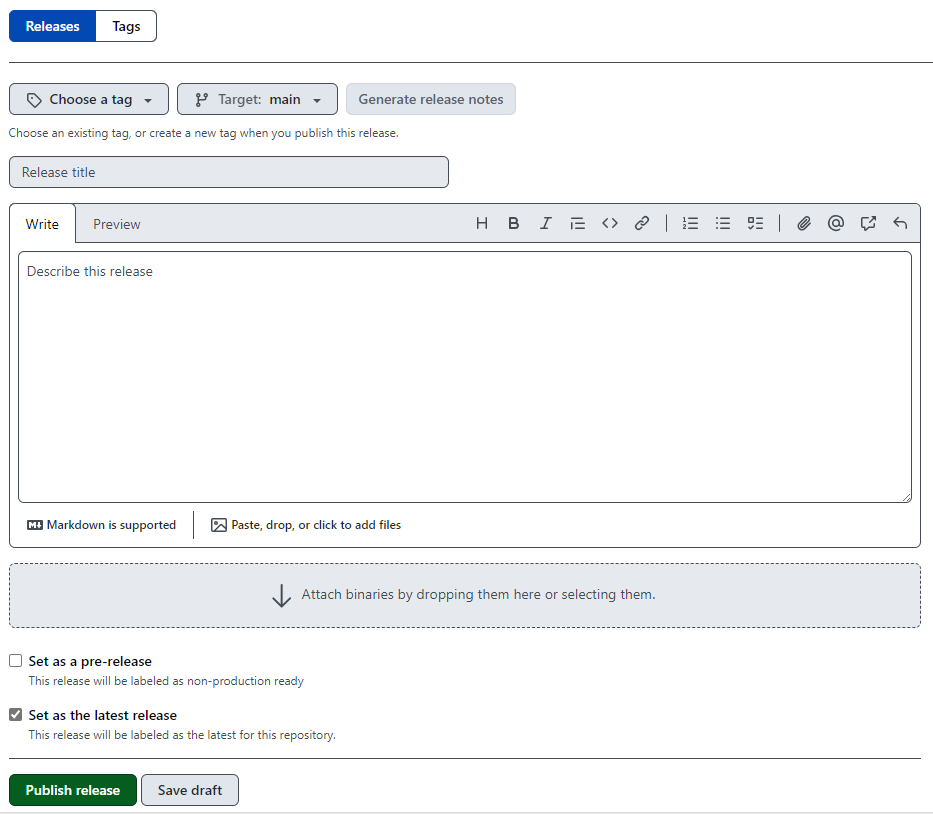

Git Tags and Releases
A tag is a git concept that allows you to label and attach information to a commit. For versioning, tags should be named according to the major/minor/patch format, prefixed by ‘v’, e.g. v1.1.0 and should match up with the version set in the package’s DESCRIPTION file on that commit.
There are two types of git tags: lightweight and annotated. A lightweight tag can be thought of as a branch that does not change and is simply a pointer to a specific commit. Annotated tags are stored as full objects in the Git database meaning they get checksummed and contain details such as the tagger name, email, date and a tagging message. Although annotated tags are generally recommended over lightweight tags, lightweight tags should be sufficient for the versioning process when developing PHS R packages.
Releases are a GitHub concept, described by GitHub as “first-class objects with changelogs and binary assets that present a full project history beyond Git artefacts.” Compared to tags, releases include release notes and links to download the software or source code from GitHub. A release can be created from an existing tag, or a new tag will be created with the new release.
If you prefer working in the terminal with git, then only tags are required. If you prefer working with a GUI GitHub releases will be used (which will also create corresponding git tags).
Creating and Pushing Tags locally using the terminal
To see a list of tags currently being used, you can run git tag. For phstemplates, we see the following tags (as at 26th June 2024).
To see details from a particular tag and the associated commit, you can use the git show command.
$ git show v1.2.1
commit 86878078431e4782697d808bb7e64b89b11de0d8 (tag: v1.2.1)
Author: Alan Y <34042624+alan-y@users.noreply.github.com>
Date: Fri Jun 14 16:39:12 2024 +0100To create a lightweight tag, we simply add the name you want to give the tag after the git tag command. For instance, git tag v1.2.2.
For an annotated tag, the -a option must be specified in git tag and the -m option can be used to set the tagging message. For example git tag -a v1.2.2 -m "my version 1.2.2". Note that if you do not include -m, a text editor will open up and you can enter the message anyway.
The key thing to remember with tags is that by default, git push does not transfer tags to Github. Tags have to be pushed separately after they have been created – for example, by typing git push origin v1.2.2.
A useful feature is that commits can be tagged retrospectively using the shortened SHA (secure hash algorithm) associated with a commit. For example, to tag commit 8687807 in phstemplates with v1.2.1, we would use
Creating a Release (and tag) using GitHub
Find the releases page for the repository, this can usually be seen in the column on the right of the page. For phstemplates the link would be https://github.com/Public-Health-Scotland/phstemplates/releases but generally it is ‘https://github.com/Public-Health-Scotland/

First, click on ‘Choose a tag’ and either pick an existing tag or type the name for the new tag, following the guidance for naming above. To avoid confusion, it should match the package version in the DESCRIPTION file and be an increase from all previous tags. The target branch will usually be main (i.e. the latest commit to main) but you can target any branch or commit if needed. Now click ‘Generate release notes’ which will auto-populate the Release notes section with Markdown content summarising all the commits made between this and the most recent tag. You can now choose to save the draft, or more likely you can click ‘Publish release’ which will create the git tag and GitHub release.